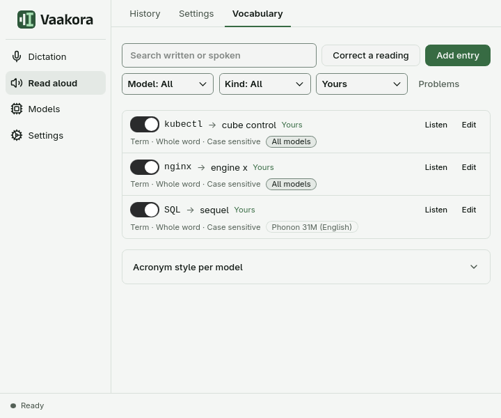

Vocabulary
Vocabulary changes how a word is spoken in Read aloud. It lists every reading, built-in and yours. You can fix how a text is read, add an entry, or limit an entry to one voice model.

- Spoken forms: each row shows what is written, an arrow and what is said, with Listen and Edit.
- Per-voice entries: an entry can apply to all models or to one voice model only. In the picture, "SQL" is spoken as "sequel" for Phonon 31M (English) only.
- Correct a reading: type or paste the written text, press Next, and Vaakora shows how it is spoken. Edit the words it should say and press Listen to hear them.
-
The file: entries are kept in
tts-vocabulary.jsonin the app data directory.